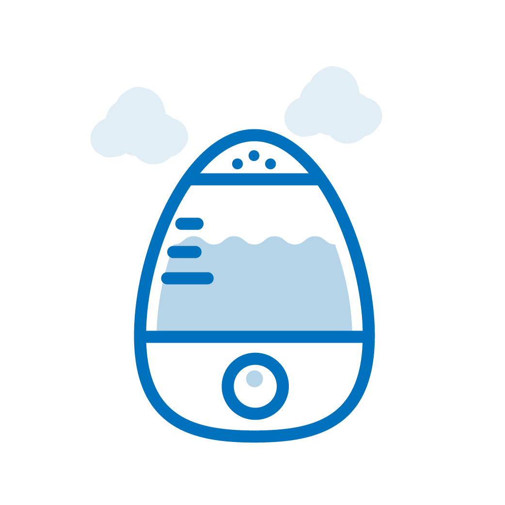
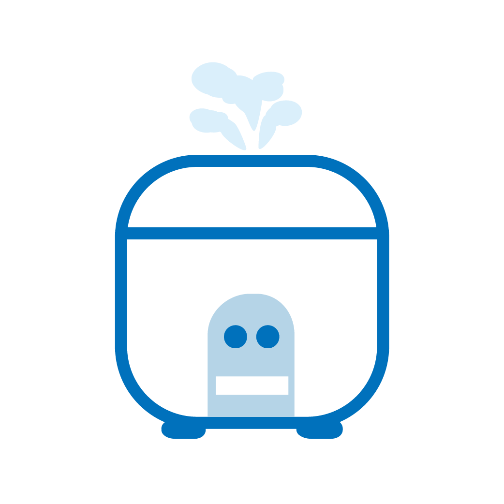

· 원인


· 특징
① 압력밥솥에서 순간적으로 내뿜는 증기의 온도는 105도 가량으로 일반 열탕화상에서의 온도 보다 높아, 잠깐만 스쳐도 깊은 화상을 입을 수 있습니다.
② 영유아가 증기 나오는 부분을 손으로 잡아서 발생하는 경우가 매우 빈번하며, 반응속도가 느린 영유아의 경우 손가락 및 손바닥에 중차대한 화상으로 이어지는 경우가 많아 보호자는 콘센트와 더불어 매우 큰 주의를 기울여야 합니다. (스팀 제품은 아이들 손이 안닿는 위치에서 사용하세요.)